Como discutido no capítulo 1, virtualmente todos os computadores
modernos tem o mesmo esquema básico, conhecido como arquitetura
de von Neumann. Este esquema divide o hardware de um computador em
três componentes principais: memória, Unidade Central de
Processamento (UCP ou CPU) e dispositivos de entrada e saída. A
memória armazena dados e instruçõesde programas. A
CPU é encarregada de buscar as isntruções e dados
da memória, executar as instruções e então
armazenar os valores resultantes de volta na memória. Os
dispositivos de entrada (tais como teclado, mouse e microfone) e
dispositivos de saída (tais como a tela, altofalantes e
impressora) possibilitam a interação com o
usuário, permitindo que as pessoas forneçam entradas e
exibindo dados, instruções e os resultados das
computações.
Este capítulo explora os detalhes da arquitetura de von
Neumann, descrevendo o funcionamento interno de um computador. As
explicações são dadas de maneira incremental,
partindo de um model simples de Parte Operativa de CPU e então
acrescentando a memória principal e depois uma Unidade de
Controle. Quando combinados com dispositivos de entrada e de
saída, estes componentes representam um modelo preciso (apesar
de simplificado) de um computor programável moderno. Para
facilitar o aprendizado, são utilizados simuladores
(desenvolvidos por Grant Braught do Dickinson College) para cada modelo.
Como visto no capítulo1, a CPU age como o cérebro do
computador. Ela é responsável por obter dados e
instruções a partir da memória, executar as
instruções e armazernar os resultados de volta na
memória. O conjunto de isntruções que uma dada CPU
de um computador pode entender e executar é conhecido como a
linguagem de máquina do computador. Os programadores podem
controlar o comportamento de um computador definindo
instruções para sua CPU - isto pode ser realizado seja
escrevendo programas diretamente em linguagem de máquina ou
escrevendo programas em uma linguagem de alto nível e
então traduzindo para linguagem de máquina. Mesmo
programas que exibem um comportamento complexo são especificados
para a CPU como sequências de instruções simples de
linguagem de máquina, cada uma executando uma tarefa que
não é mais complexa do que somar dois números ou
copiar dados para uma nova posição na memória. No
entanto, A CPU pode executar estas instruções de maneira
tão rápida que pode ser obtido um comportamento complexo
do computador.
A CPU é composta de várias subunidades, cada uma com uma função específica na operação do processador como um todo. Estas subunidades são a Unidade Logico-Aritmética (ULA), registradores e Unidade de Controle.
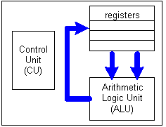
Figure 14.1: Subunidades da Unidade Central de Processamento (CPU).
Os caminhos que os dados seguem dentro da CPU, viajando através de barramentos a partir dos registradores para a ULA e então de volta para os registradores é conhecido como Parte Operativa da CPU. Todas as tarefas realizadas por um computador, desde formatar um documento até exibir páginas em um navegador Web, são decompostas em sequências de operações imples; o computador executa cada operação individual movimentando dados dos registradores para a ULA, executando computações sobre estes dados na ULA e então armazenam o resultado nos registradores. Uma passagem completa pela Parte Operativa da CPU (dos resgistradores passando pelos barramentos e ULA e voltando aos registradores) é chamado de ciclo da Parte Operativa, ou ainda ciclo da CPU.
Relembrando o que vimos no capítulo 1, onde foi definida a
velocidade da CPU como medida pelo número de
instruções que a CPU pode executar em um segundo.
Como cada instrução precisa de um ciclo de CPU para
executar, a velocidade da CPU corresponde diretamente ao número
de ciclos de CPU que ocorrem por segundo. Por exemplo, uma CPU de 800
MHz é capaz de executar 800 milhões de ciclos em um
único segundo, enquanto uma CPU de 1,4 GHz é capaz de
executar 1,4 bilhoes de ciclos de CPU em um segundo. No entanto,
não se pode avaliar CPUs somente comparando a velocidade dos
processadores, pois duas linguagens de máquina diferentes podem
dividir a mesma tarefa em diferenets conjuntos de
isntruções e um conjunto de instruções pode
ser mais eficiente que o outro. Isto é, uma CPU pode ser capaz
de completar uma dada tarefa em um único ciclo, enquanto outra
pode precisar de vários ciclos para completar a mesma tarefa.
Para comparar o desempenho de CPUs, deve-se considerar o conjunto de
instruções de cada CPU, bem como fatores como o
número de registradores e tamanho dos barramentos que
transportam os dados entre os componentes.
Para ajudar a visualizar o comportamento da parte operativa da CPU, vamos usar um simulador. O Simulador de Parte Operativa da CPU modela uma CPU simples contendo quatro registradores. Usando o simulador, você pode seguir o fluxo dos dados a medida que eles trafegam pela parte operativa da CPU, a partir dos registradores para a ULA e de volta para os registradores. Para deixar as coisas simples, não é incluida uma Unidade de Controle explícita neste simulador. Ao invés disto, o usuário deve agir como a Unidade de Controle, selecionando os registradores de entrada, a função da ULA e o registrador de saída clicando nos botões do simulador.
As figuras 14.2 até 14.5 demonstram o uso do simulador para
somar dois números - uma tarefa que pode ser realizada em um
único ciclo de CPU.
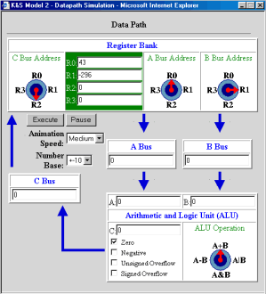
Figure 14.2: Configuração inicial do simulador.
Figura 14.3: Dados movendo dos registradores para a ULA.
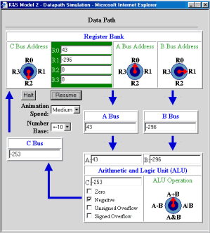
Figura 14.4: Dados trafegando da ULA para os registradores.
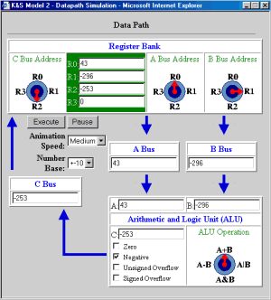
Figura 14.5: Resultado final do ciclo de CPU.
Apesar da Parte Operativa da CPU descrever como um computador executa computações sobre dados armazenados em registradores, nós ainda não explicamos como os dados entram nos registradores e como os resultados das operações da ULA são acessados fora da CPU. Estas duas tarefas envolvem conexões entre a CPU e a memória princiapl. Como visto no capítulo 1, todos os programas e dados ativos estão armazenados na memória principal de um computador. Nós podemos pensar da memória principal como uma grande coleção de posições de memória, na qual cada posição é acessível através de um endereço. De mesma maneira que os endereços de uma rua (por exemplo, tristão monteiro 590) permitem um carteiro encontrar um destinatário, um endereço de memória (por exemplo, posição de memória 31) permite a CPU encontrar e acessar um pedaço específico da memória principal. Um barramento conecta a memória principal com a CPU, permitindo ao computador copiar dados e instruções em registradores e então copiar os resultados das computações de volta para a memória principal. A figura 14.6 ilustra a interação entre a memória principal de um computador e a CPU; as setas escuras representam o fluxo de dados da parte operativa da CPU, enquanto as setas mais claras representam o barramento que conecta a memória principal aos registradores.
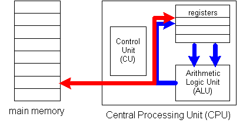
Figura 14.6: Um barramento conecta a memória principal
à CPU
Enquanto um programa está sendo executado, a Unidade de Controle processa as instruções do programa e identifica que valores de dados serão necessários para realizar as tarefas especificadas. Os valores desejados são então buscados a partir da memória principal através do barramento da memória principal, carregados em registradores e utilizados pelas operações da ULA.
Como um exemplo concreto, imgine que você tem um arquivo contendo
1.000 números e precisa computar a soma destes números. O
arquivo pode ser carregado na memória principal - por exemplo,
nas posições de memória 500 até 1499.
Então, a Unidade de Controle pode realizar os seguintes passos
para somar estes números e armazenar a soma resultante de volta
na memória.
Note que cada número deve ser transferido em um registrador antes que ele possa ser acrescentado à soma total. Na prática, transferir dados entre a memória principal e a CPU ocorre em uma velocidade bem menor do que a de um ciclo de CPU. Isto é principalmente devido ao fato de que os sinais eletricos devem viajar por uma grande distância - por exemplo, a partir de um chip de RAM separado para o chip da CPU. No tempo que leva para os dados trafegarem pelo barramento da memória principal e alcançar os registradores, vários ciclos de CPU pode ocorrer. Os processadores modernos compensam este atraso com hardware especial que premite que várias instruções sejam buscadas ao mesmo tempo. Ao buscar várias instruções de antemão, o processador pode começar a lidar com uma próxima instrução e executar computações úteis enquanto uma transferência de dados anterior está ainda em andamento.
Para ajudar a visualizar as relações entre a CPU e a
memória principal, o simulador da parte operativa da CPU foi
acrescido com uma memória principal. Este simulador
estendido inclui uma memória principal que pode armazenar
até 32 números, com endereços entre 0 e 31. Um
novo barramento, rotulado Barramento da Memória Principal,
conecta a memória principal com a CPU; este barramento permite
que dados sejam copiados da memória principal para os
registradores, bem como permite que os resultados da ULA possam
ser armazenados na memória principal. Como no exemplo anterior,
esta versão do simulador não possui uma Unidade de
Controle explícita. O usuário deve trabalhar como se
fosse a Unidade de Controle, selecionando os ajustes desejados no
barramento da memória principal para controlar o fluxo de dados.
As figuras 14.7 até 14.9 demonstram o uso do simulador para somar dois números armazenados na memória.
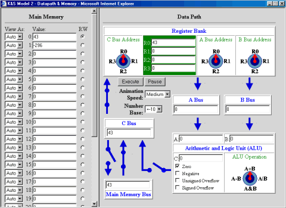
Figure 14.7: Primeiro, 43 é carregado a partir da
memória em R0.
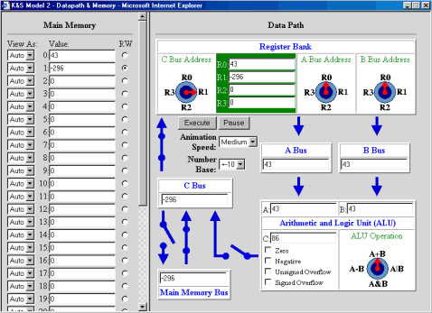
Figure 14.8: Segundo, -296 é carregado a partir da
memória em R1.
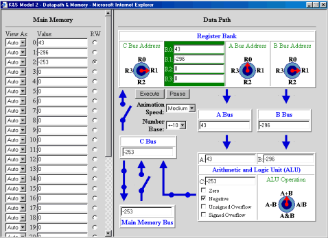
Figure 14.9: Finalmente, os valores são somados e a soma
é armazenada de volta na memória.
Duas obervações interessantes podem ser feitas em relação ao comportamento do simulador. Primeiro, o simulador precisa de mais tempo para copiar dados entre a memória e a CPU do que ele precisa para executar um ciclo de CPU. Este atraso simula o efeito do tempos de acesso lentos associados com a memória principal. Em um computador real, cerca de até 10 ciclos de CPU podem ocorrer no tempo que leva para uma transferência de dados entre a CPU e a memória principal. A segunda observação é que, mesmo enquanto os dados estão sendo buscados a partir da memória, as operações ainda estão sendo executadas na parte operativa da CPU. Por exemplo, na figura 14.8, o número em R0 (43) é enviado através dos barramentos A e B para a ULA, produzindo a soma 86. Isto pode parecer lixo, pois o resultado das operações da ULA é ignorado (devido ao barramento C está desconectado). De maneira surpreeendente, isto reflete precisamente o funcionamento interno da CPU. É mais eficiente para a CPU executar computações desnecessárias enquanto dados estão sendo transferidos para ou a partir da memória do que adicionar circuitos extras para reconhecer se o barramento C estava desconectado.
Agora que discutimos sobre a memória principal, estamos prontos para lidar com o último componente da CPU: uma Unidade de Controle totalmente funcional e automática. Para entende o papel da Unidade de Controle, relembre as tarefas que você realizou enquanto usava os simuladores. Quando você experimentou com Simulador de Parte Operativa, você definiu a computação que um ciclo de CPU deveria executar através da seleção dos registradores e da operação da ULA via botões. No simulador da parte operativa e memória principal, você controlou o fluco de informação entre a parte operativa e memória através de chaves e botões. A principal idéia por trás de um computador com programa armazenado é que estas tarefas pode ser representadas por instruções, armazenada na memória principal junto com os dados e então executadas pela Unidade de Controle.
Uma linguagem de máquina é um conjunto de instruções correspondendo às tarefas básicas que uma CPU pode realizar. Em essência, cada instrução de linguagem de máquina especifica a configuração dos componentes de hardware que define uma particular computação em um ciclo da CPU. Assim, nós devemos definir instruções em linguagem de máquina para nosso simulador, enumerando todos os ajustes físicos dos botões e chaves. Por exemplo,
definiria uma configuração na qual os conteúdos
de R0 e R1 seriam somados e o resultado armazenado de volta em R2. Esta
notação pode ser suficiente para controlar o
comportamento de uma máquina muito simples, tal como uma
representando nosso simulador; no entanto, CPUs nop mundo real possuem
um grande número de componentes físicos e especificar o
estado de todas estas partes durante cada ciclo de CPU seria
impossível. Além disso, como as isntruções
são armazenadas na memória junto com os dados, as
instruções devem ser representadas como padrões de
bits.
A figura 14.10 descreve uma linguagem de máquina simples que foi projetada para nosso simulador. Como as posições da memória principal em nosso simulador podem caber no máximo 16 bits, nossa linguagem representa cada isntrução como um padrão de 16 bits. Os primeiros bits de cada padrão indicam o tipo de tarefa que a CPU dem realizar, enquanto os bits seguintes indicam os registradores e/ou posições de memória envolvidas na tarefa. Por exemplo, todas as instruções que envolvem soma de conteúdo de dois registradores começam com o padrão de bits 1010000100. Os seis bits finais da isntrução representam o registrador destino em binário (isto é, o registrador onde o resultado será armazenado) e os registradores fonte (isto é, os registradores cujos conteúdos serão somados pela ULA), respectivamente. Por exemplo, suponha que você quer somar os conteúdos de R0 e R1 e então armazenar o resultado em R2 - isto é R2 = R0 + R1. Os padrões de bits para R2 (2 = 10 em binário), R0 (0 = 00 em binário) e R1 (1 = 01 em binário) devem ser acrescentados no final do padrão de bits, produzindo a instrução em linguagem de máquina 1010000100100001. De maneira semelhante, se a intenção é fazer R3 = R0 + R1, então o padrão de bits para R3 (3 = 11 em binário) deve substituir o de R2: 1010000100110001.
| Operação | Instrução em Linguagem de Máquina | Exemplo |
|---|---|---|
| somar conteúdo de dois registradores, armazenar
resultado em outro regsitrador p.ex., R0 = R1 + R2 |
1010000100 RR RR RR | 1010000100 00 01 10 somará os conteúdos de R1 (01) e R2 (10), armazenando resultado em R0 (00) |
| subtrair conteúdo de dois registradores, armazenar
resultado em outro regsitrador p.ex., R0 = R1 - R2 |
1010001000 RR RR RR | 1010001000 00 01 10 pega o conteúdo de R1 (01), subtrai R2 (10), e aramzena resultado em R0 (00) |
| carregar conteúdo da posição de
memória em um registrador p.ex., R3 = M[5] |
100000010 RR MMMMM | 100000010 11 00101 carrega conteúdo da posição de memória 5 (00011) em R3 (11) |
| armazena conteúdo de registrador em uma
posição de memória p.ex., M[5] = R3 |
100000100 RR MMMMM | 100000100 11 00101 armazena na posição de memória 7 (00101) o conteúdo de R3 (11) |
| move conteúdo de um registrador para outro registrador
p.ex., R1 = R0 |
100100010000 RR RR | 100100010000 01 00 move conteúdo de R0 (00) para R1 (01) |
| parar a máquina |
1111111111111111 |
As primeiras duas instruções da linguagem de máquina da figura 14.10 correspondem às tarefas que os usuários podem realizar com o simulador de parte operativa da CPU - isto é, selecionar uma operação da ULA e os registradores a serem operados no ciclo de CPU. As três instruções seguintes correspondem às tarefas que os usuários podem realizar com a versão do simulador para parte operativa com memória - isto é, controlar o fluxo de informação entre a memória principal e a parte operativa. A última instrução, parar (HALT), indica para a Unidade de Controle quando uma sequencia de isntruções termina. É claro que em uma CPU real se tem muito mais instruções do que estas. Por exemplo, se uma CPU executa um programa que inclui desvios condicionais (por exemplo, comandos se ... então e repetições), sua linguagem de máquina deve fornecer isntruções de desvio que permitam a CPU pular de uma instrução para outra. No entanto, o conjunto de instruções limitado da figura 14.10 é suficiente para demonstrar o funcionamento de uma CPU básica e sua Unidade de Controle.
Uma vez que uma linguagem uniforme para uma dada CPU é
estabelecida, as instruções podem ser armazenadas na
memória juntamente com os dados. É então
função da Unidade de Controle obter cada
instrução em linguagem de máquina a partir da
memória, interpretar seu significado, executar o ciclo de CPU
correspondente e então passar para a próxima
instrução. Como instruções e dados
estão armazenados na mesma memória, a Unidade de Controle
deve ser capaz de reconhecer onde uma sequência de
instruções começa e termina. Em computadores
reais, isto é usualmente controlado pelo sistema operacional, o
qual mantém uma lista de cada programa em memória e sua
localização. Por simplicidade, nosso simulador assume que
a primeira instrução se encontra na posição
0 da memória. O final da sequência de
instruções é definida explicitamente pelo
padrão de bits "parar" (HALT).
Para ordenar a execução de uma sequência de isntruções, a Unidade de Controle mantém um Contador de Programa (Program Counter - PC) , que armazena o endereço da próxima instrução a ser executada. Como nós assumimos que todo programa começa no endereço 0, o valor do PC é inicializado com o valor 0 antes de começar a execução do programa. Quando a Unidade de Controle precisa buscar e executar uma instrução, ela acessa o PC e então obtém a instrução armazenada na correspondente posição de memória. Depois que a Unidade de Controle busca a instrução, o PC é automaticamente incrementado, assim ele identifica a próxima instrução na sequência.
Os passos realizados pela Unidade de Controle podem ser definidos
com um algoritmo geral, no qual as instruções são
repetidamente buscadas e executadas:
Algoritmo de busca e execução implementado pela Unidade de Controle:
- Inicializa PC = 0.
- Busca a instrução armazenada na posição de memória indicada pelo conteúdo do PC, e faz PC = PC + 1.
- Enquanto a instrução corrente não for a instrução "parar" (HALT):
- Decodifica a instrução - isto é, identifica a instrução e determina as configurações do hardware da CPU que devem ser usadas para executar a instrução.
- Configura o hardware da CPU para corresponderem ao indicado pela instrução.
- Executa um ciclo de parte operativa da CPU.
- Quando o ciclo se completa, busca a próxima instrução a partir da posição indicada pelo conteúdo do PC, e faz PC = PC + 1.
Por exemplo, suponha que a memória principal contém o
programa e os dados mostrados na figura 14.11
As primeiras cinco posições de memória
(endereços de 0 até 4) contém
isntruções em linguagem de máquina para somar dois
números e armazenar sua soma de volta na memória. Os
números podem a serem somados são armazenados na
posições de memória 5 e 6. Para executar este
programa, a Unidade de Controle deve seguir os seguintes passos:
O Simulador
do computador com programa armazenado modela o comportamento de um
computador com programa armazenado completo. Instruções e
dados podem ser entrados na memória, assumindo-se que a primeira
instrução deve ser sempre colocada na
posição 0 da memória. A Unidade de Controle
é responsável pela busca e interpretação de
instruções em linguagem de máquina, bem como
realizar as tarefas especificadas por estas isntruções.
O simulador contém várias caixas de
exibição para ajudar os usuários a acompanhar o
funcionamento interno da Unidade de Controle. Como descrito na
seção anterior, o contador de programa indica o
endereço da próxima instrução a executada.
Além do PC, a CPU mantém um Registrador de
Instrução (Instruction Register - RI) que sempre
contém a instrução que está sendo executada
no momento pela CPU. O registrador IR é mostrado pelo simulador
como uma caixa de texto adicional. Acima destas caixas, o simulador
mostra os botões e chaves definidos pela isntrução
corrente - isto torna a correspondência entre a
instrução em linguagem de máquina e os ajustes nos
botões e chaves mais claro. Os valores dos botões
são especificados em binário: 00 representa o
botão posicionado para cima, 01 representa o
botão posicionado para a direita, 10 representa o botão
posicionado para baixo e 11 representa o botão posicionado para
esquerda. Os valores da chaves também são escritos em
binários, com um bit 1 representando a chave fechada e 0
indicando a chave aberta.
As figuras de 14.12 até 14.17 demonstram o uso do simulador
para executar o exemplo do programa em linguagem de máquina da
figura 14.11.
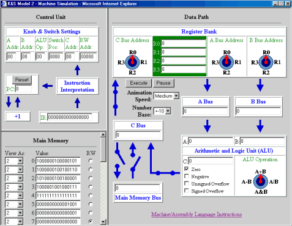
Figura 14.12: Estado inicial do simulador, com programa armazenado
na memória principal.
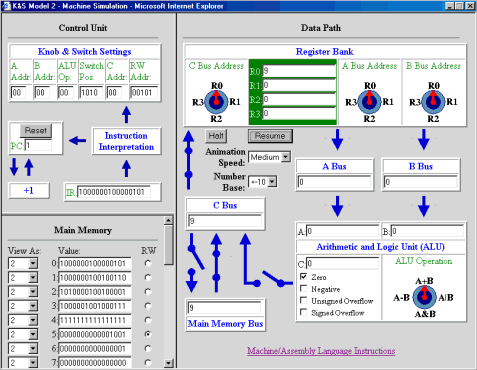
Figure 14.13: Simulador depois da primeira instrução
ter sido executada (R0 = MM5).
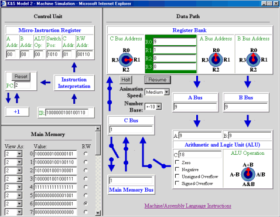
Figure 14.14: Simulador depois da segunda instrução
ter sido executada (R1 = MM6).
Figure 14.15: Simulador depois da terceira instrução
ter sido executada (R2 = R0 + R1).
Figure 14.16: Simulador depois do quarto comando ter sido executado
(MM7 = R2).
Figure 14.17: Simulador depois do quinto comando ter sido executado
(HALT).
O simulador é projetado de maneira que o usuário possa
entrar valores na memória principal em decimal ou em
binário. Por padrão, os valores entrados pelo
usuário são assumidos estarem em decimal. No entanto, o
usuário pode sempre selecionar 2 a partir da caixa View As
a esquerda da posição de memória para ver o
conteúdo em binário. Antes de entrar uma
instrução em linguagem de máquina em uma
célula de memória, o usuário deve primeiro
selecionar 2 ta partir da caixa View As pois as
instruções em linguagem de máquina são
representadas em binário.
Para completar nossa descrição do computador com programa armazenado, nós devemos pelo menos discutir brevemente a função dos dispositivos de entrada/saída. Os dispositivos de entrada tais como teclados, mouses e digitalizadores permitem o usuário entrar dados e instruções para o computador, que são então armazenados na memória e acessados pela CPU. Da mesma maneira, os dispositivos de saída tais como tela, altofalantes e impressoras permitem ao usuário acessar os resultados das computações que estão armazenados na memória.
Nos computadores projetados para executar um programa de cada vez, tais como os primeiros computadores programáveis da década de 1950 e mesmo os primeiros computadores pessoais da década de 1970, a interação com o usário era direta e sem muitas complicações. O usuário entra instruções de programas e dados diretamente nas posições da memória principal usando dispositivos de entrada tais como teclados ou leitores de fitas. Então apertando um botão, virando uma chave ou entrando um comando específico, o usuário mandava a CPU busca e executar as instruções do programa a partir da memória. O usário pode então observar os resultados da computação exibindo o conteúdo da memória em uma tela ou o enviando para uma impressora. Este processo é modelado por nosso simulador, no qual o usuário entra diretamente com isntruções e dados nas caixas da memória principal e então inicia a execução clicando em uma botão. Por outro lado, a maioria dos computadores modernos permitem que váriosprogramas sejam carregados na memória e sejam executados simultaneamente. Em tais computadores, o sistema operacional deve atuar, recebendo os dados e instruções do usuário, armazenando na memória e indicando suas posições na memória para a CPU.